Next: Unit Conventions in McPhase Up: McPhase USERS MANUAL Previous: Theory for program bfk Contents Index
Detailed Calculation: take the point group 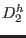, the Stevens Operators  taken as a vector form
a representation of this point group, which is reducible. Follow the procedure outlined in the book [68]
to split this representation into irreducible parts. The basis vectors of the unit representation may then be
linear combined with some arbitrary crystal field parameters to give the most general crystal field.
Note that the basis vectors of the unit representation can be obtained efficiently by constructing the
projection operator (eq. 4.51 in [68])
into the subspace transforming according to the irreducible unit representation.
taken as a vector form
a representation of this point group, which is reducible. Follow the procedure outlined in the book [68]
to split this representation into irreducible parts. The basis vectors of the unit representation may then be
linear combined with some arbitrary crystal field parameters to give the most general crystal field.
Note that the basis vectors of the unit representation can be obtained efficiently by constructing the
projection operator (eq. 4.51 in [68])
into the subspace transforming according to the irreducible unit representation.
In general the bilinear two ion interaction has the form
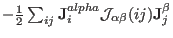.
 and
and  number the different positions of the magnetic ions in the lattice. Without loss of
generality the interaction constants
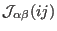 can be chosen such that
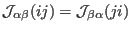 (because the expression is symmetric in
angular momentum components any anisotropic part of the interaction tensor does not contribute to the
interaction energy).
number the different positions of the magnetic ions in the lattice. Without loss of
generality the interaction constants
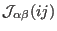 can be chosen such that
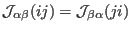 (because the expression is symmetric in
angular momentum components any anisotropic part of the interaction tensor does not contribute to the
interaction energy).
If  and
and  are nearest neighbours on a orthorhombic lattice, they are situated on one of the
crystallographic axes, for example at [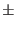100]. The off-diagonal components of the corresponding
interaction tensor
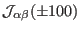 vanish, because spin-configurations such as
a moment (m00) on [000] and (0m0) on [100] must have the same magnetic energy as (m00) on [000] and
(0-m0) on [100]. Furthermore the spin-configuration with (m00) on [000] and (m'00) on [100] must
have the same magnetic energy as (m00) on [000] and (m'00) on [-100]. This and similar
considerations lead to the conclusion that the interaction tensor must be the same for [-100] and
[+100]. Therefore the most general form of the interaction
is
are nearest neighbours on a orthorhombic lattice, they are situated on one of the
crystallographic axes, for example at [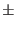100]. The off-diagonal components of the corresponding
interaction tensor
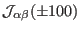 vanish, because spin-configurations such as
a moment (m00) on [000] and (0m0) on [100] must have the same magnetic energy as (m00) on [000] and
(0-m0) on [100]. Furthermore the spin-configuration with (m00) on [000] and (m'00) on [100] must
have the same magnetic energy as (m00) on [000] and (m'00) on [-100]. This and similar
considerations lead to the conclusion that the interaction tensor must be the same for [-100] and
[+100]. Therefore the most general form of the interaction
is
| 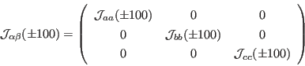 | (257) |